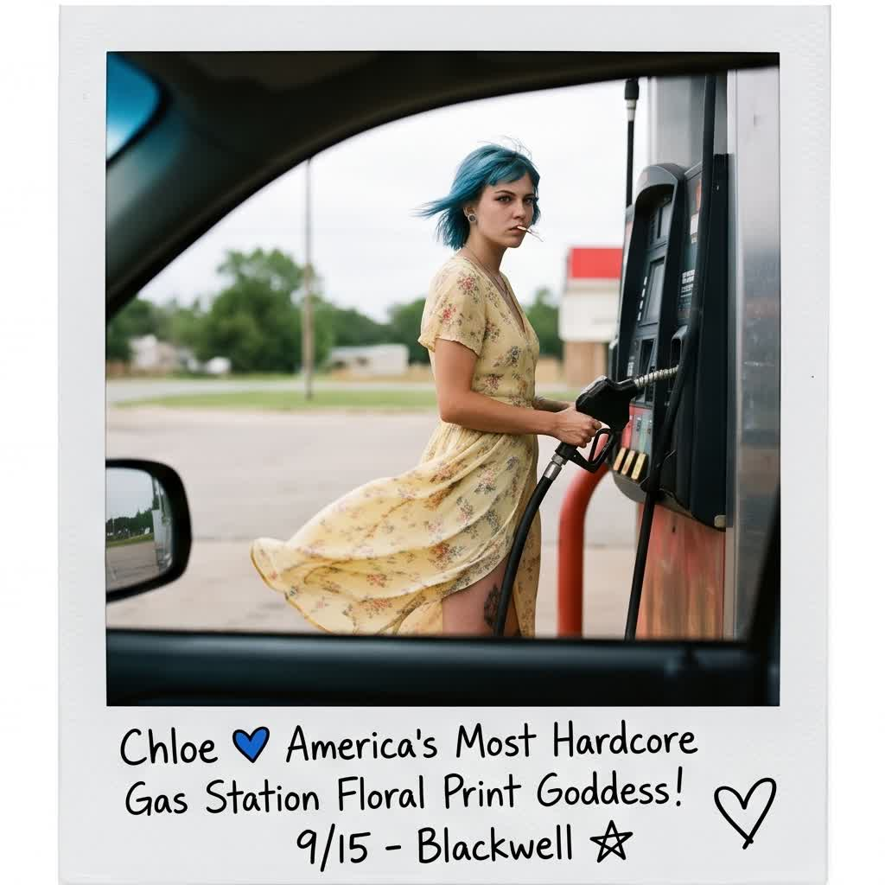
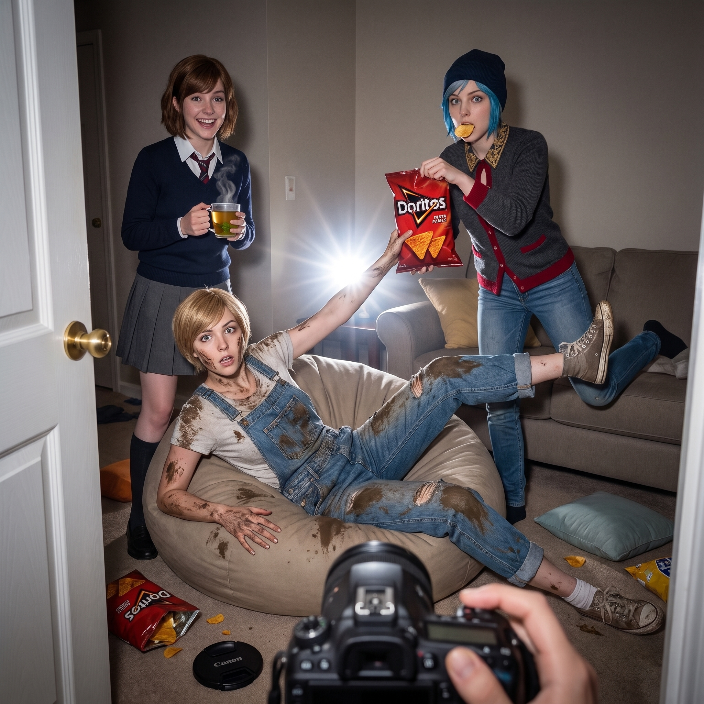
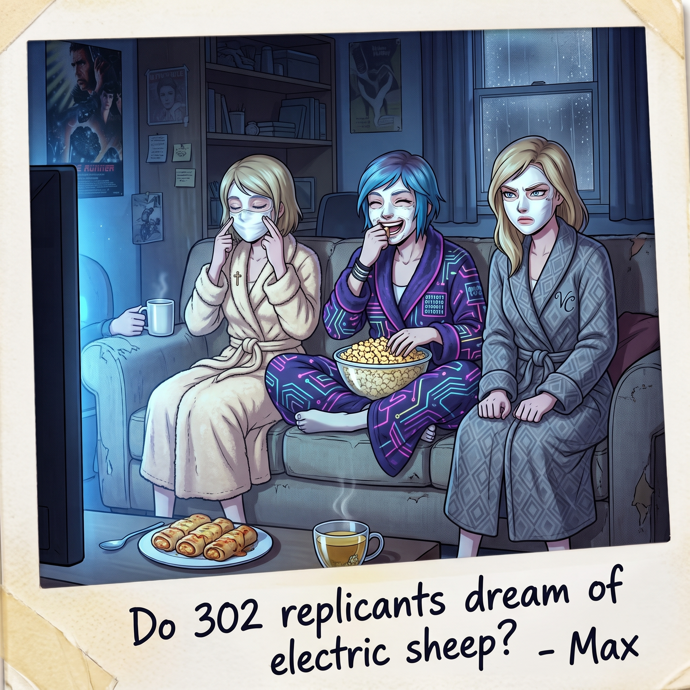
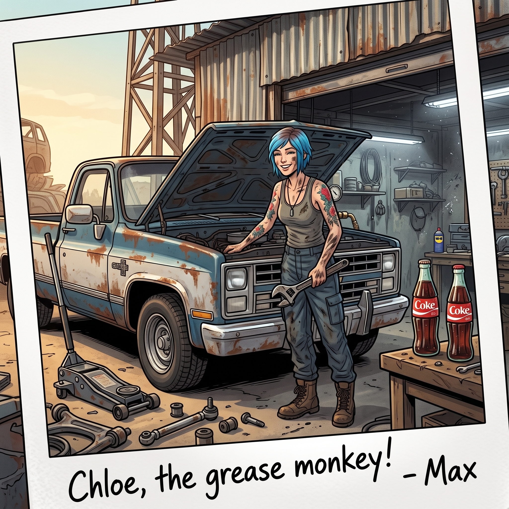
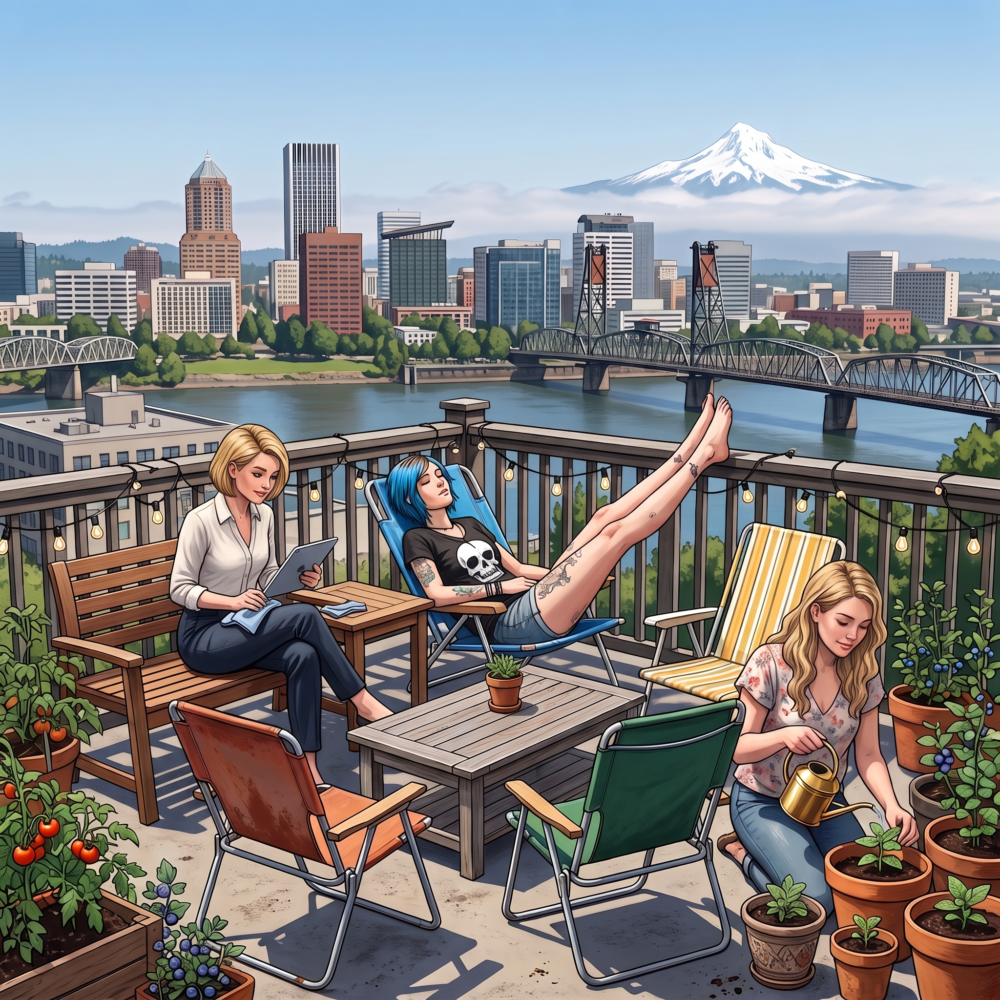
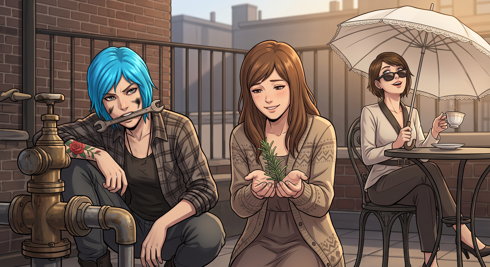
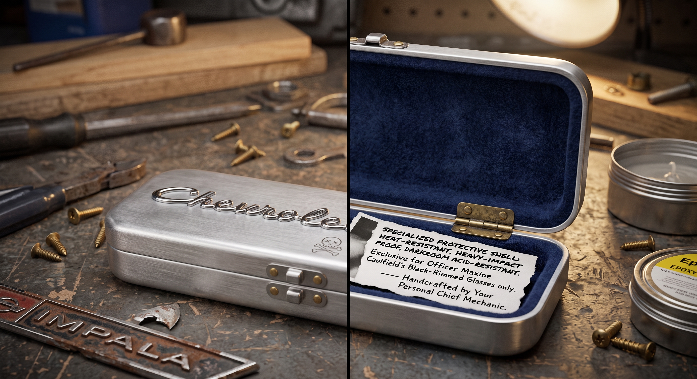

POLAROID ARCHIVE
拍立得相簿
散落在故事裡的51張快照,點一張放大看,再點「回到章節」就能翻到它出現的地方

意外的漁夫

辭職與復工

還債日

拆遷隊

海岸線露營

傳統的反攻

暗房與修羅場

暗房與修羅場

暗房與修羅場

暗房與修羅場

奧林匹亞·地下室

沉船與膠片

沉船與膠片

陷車驚魂、汽車旅館與二手店砍價
敲鐵皮邏輯
唱片與古著
喬治城的光與油污
喬治城的光與油污
飛魚驚魂

碎花裙受難記

拍立得題字拉鋸戰

碎花裙加油站

反擊偷拍行動
工具神殿

兜風驚魂

迂迴的索求
馬桶暗房翻車記

世紀大和解抓拍
微距魔法與天台午後

下午茶階級對決
護短雙重暴擊
吃雪糕慶功
吃雪糕慶功
工廠鬧劇
工廠鬧劇

下海追逐戰
車內取暖

面膜與銀翼殺手之夜

軍規扭力手柄
相框與日記
查分日

畢業典禮
珍珠區的頂層Loft

珍珠區的頂層Loft

負空間
週六市集
一級通水測試
一級通水測試
一級通水測試

顯影

車庫手工藝的跨界勝利